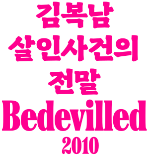
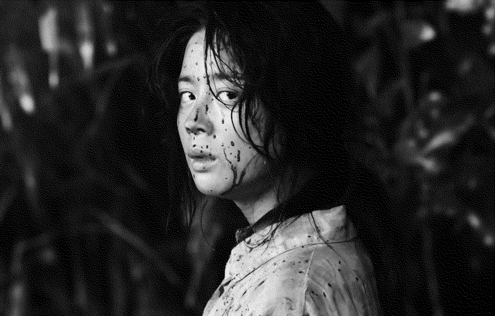

김복남
복수자
김복남 살인사건의 전말
Bedevilled
2010년
감독 장철수
스릴러
115분
김복남 역
서영희

김복남의 첫 번째 대사
아이, 미안. 맨날 그렇게 바쁘네. 서울 생활은 늘 그런가벼잉? 편지 보내도 답장도 없고. 진짜 한 번 안 올 겨?
00:03:25

김복남의 마지막 대사
마을에서 누가 일하다 말면 시고모가 그랬거든. 복남이는 김매다 말도 탄다고. 이젠 그런 소리 듣기 싫어!
01:44:53